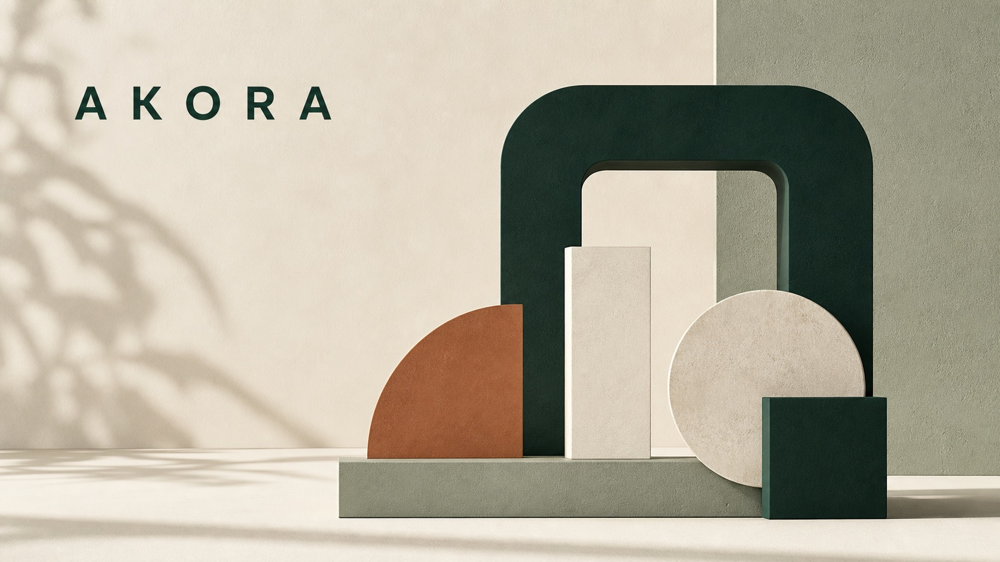

사람을 먼저 봅니다.
Begin with real life.
새로운 기술을 어디에 쓸지 고민하기 전에, 사람들이 언제 어떤 도움을 필요로 하는지부터 살핍니다.
We put people and their lived context before technology. Every service begins by understanding the moments when support truly matters.
아코라 유한회사 AKORA
아코라는 사람들이 자신을 더 잘 이해하고 돌볼 수 있도록 돕습니다. AI와 디지털 기술을 활용해 좋은 변화를 시작하고 꾸준히 이어갈 수 있는 서비스를 만듭니다.
AKORA helps people better understand and care for themselves. We use AI and digital technology to build services that make positive change easier to begin and sustain.

우리가 만드는 방식 How we build
좋은 기술은 사람에게 변화를 재촉하지 않습니다. 스스로 더 나은 선택을 하고, 그 선택을 꾸준히 이어가도록 도와야 합니다. 우리는 사람에게 실제로 도움이 되는지를 기준으로 기술을 고르고 서비스를 만듭니다.
Good technology does not pressure people to change. It gives them the agency to keep making better choices. We place technology in the context of real life, so small changes can last.
우리가 지키는 것 Our principles
새로운 기술을 어디에 쓸지 고민하기 전에, 사람들이 언제 어떤 도움을 필요로 하는지부터 살핍니다.
We put people and their lived context before technology. Every service begins by understanding the moments when support truly matters.
AI가 더 정확하고 세심한 도움을 줄 수 있을 때 사용합니다. 보여 주기 위한 기능은 만들지 않습니다.
AI is not a label to lead with. It is a tool for more relevant, thoughtful support, used responsibly where it creates real value for people.
잠깐의 관심으로 끝나는 서비스는 만들지 않습니다. 사람들이 좋은 선택을 꾸준히 이어가도록 돕고, 사용자의 시간과 정보도 소중히 다룹니다.
We look beyond immediate reactions to positive change that endures. We protect people’s time, information, and trust throughout the journey.
회사 소개 Company
사람들이 자신을 더 잘 이해하고 돌보며, 좋은 변화를 꾸준히 이어가도록 돕습니다. 구체적인 서비스는 충분히 준비되면 이곳에서 하나씩 소개하겠습니다.
We help people better understand and care for themselves, so positive change can continue. AKORA’s digital services will be introduced here when they are ready.
공고 Public notices